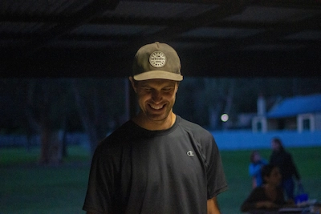

At Splash White Water Rafting, our mission is to deliver unforgettable outdoor adventures that combine excitement, safety, and the beauty of nature. Our experienced guides are passionate about creating thrilling river experiences for beginners and experts alike. Whether you're seeking adrenaline or a scenic escape, we’re here to make every moment on the water count.